让 Agent 可评、可控、可迭代：业务效果导向的评测体系与场景实践
来源：微信公众号 归档日期：2026-09-18 抓取状态：成功 原文字符：22392｜配图：21 张
摘要速览
- 针对策略效果类 Agent 评测三大难题：反馈信号稀缺且延迟（3 组 AB/天、T+1 收集，半月仅约 100 条偏好对）、评估是多维动态权衡、离线合理不等于线上有效。
- 方法论「五层、四步、三阶段」：五层评什么（Prompt 约束→业务效果，提示 L1→L3、L2→L4 级联风险）；四步归因（诊断、定位、优化、验证）；三阶段上线治理（准入、灰度、监控与数据回流）。
- 核心创新 Auto Rubrics：三层架构构建可解释的业务效果 Judge，规避位置偏差、选择过拟合等系统性陷阱。
- 把评测从静态判断转为动态闭环，业务阶段变化时好坏定义随之更新。
核心内容
原文正文抓取失败，基于收件箱摘要归档，待补充原文。
- 五层评测对象：从 Prompt 约束到业务效果逐层拆解，低层指标好不代表高层有效（级联风险）。
- 四步质量归因：评完不是终点，诊断→定位→优化→验证形成回路。
- 三阶段上线治理：准入、灰度、监控与数据回流，解决「离线合理≠线上有效」。
- Auto Rubrics：用三层架构自动生成可解释的业务效果评分标准，替代拍脑袋 Judge。
可执行启发
- 给内部 Agent 建评测先按「评什么/评完怎么办/如何上线」三问分层，避免只堆离线准确率。
- 稀疏延迟反馈场景优先建偏好对回流管道，样本量不足时不要过早下结论。
归属：[[02-输入/按主题/工具与技术/_index|工具与技术]]
我的想法
（待补充）
原文沉淀
目录
- 为什么不直接用评分？
- 转化思路：从“打分”到“比较”
- 第一层：Rubric 供给层
- 第二层：Rubric筛选层
- 问题重构
- 消除位置偏差
- 稳定性筛选：
- 交叉验证贪心选择：
- 第三层：可信数据集验证
- 什么是策略收敛？
- 为什么这个判断很难？
- 四层漏斗：逐层过滤噪声
- ¤ 拓展阅读 ¤
策略效果类Agent评测面临反馈信号稀缺、评估多维权衡、离线与线上效果脱节三大难题。文章提出"五层、四步、三阶段"方法论：五层评测对象（从Prompt约束到业务效果）明确"评什么"；四步质量归因（诊断、定位、优化、验证）解决"评完怎么办"；三阶段上线治理（准入、灰度、监控）回答"如何上线"。针对离线评测与线上效果对齐难题，创新性提出Auto Rubrics方法，通过三层架构构建可解释的业务效果Judge体系，有效规避位置偏差、选择过拟合等系统性陷阱，实现策略效果的可信评估，为策略类Agent规模化落地提供质量保障。该方法论将评测从静态判断转变为动态闭环，确保策略生成能力真正可扩、可控、可回归。
业务背景
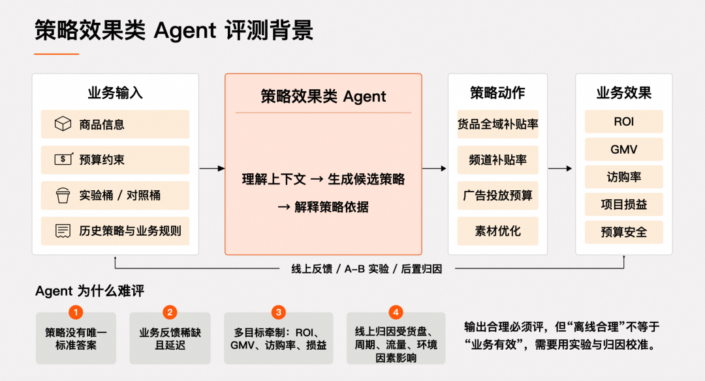
策略效果类 Agent 的真正难题，不是“能不能生成策略”，而是从人工单点判断走向规模化生产后，质量如何持续保证。人工可以凭经验为少数典型场景给出方向，但一旦业务希望把一套已经验证过的策略机制，复制到更多品类的商品，问题就不再只是“某条输出看起来是否合理”，而是这套策略生成能力是否真的可扩、可控、可回归。
商品营销场景把这个难题放得更突出。输入本身就在持续变化：商品业务效果数据、预算约束、historyBest 策略（帕累托最优策略）、实验桶 / 对照桶的策略及效果数据、人工运营规则每天都在刷新；而输出往往没有唯一标准答案，补贴策略、广告投放策略、素材优化策略等与线上 ROI、GMV、访购率等数据之间不存在稳定的相关性。更关键的是，离线看起来合理的策略，到了线上还会受到环境、货盘、周期、流量影响，线上指标变化不能直接归因为策略质量。
可以发现，策略效果类 Agent 相比于问答、摘要、代码生成这类任务型 Agent，它的一个重要区别在于：它的输出往往不是可以静态判定的“答案”，而是会进入真实业务执行并影响大盘指标的策略配置。它本身没有确定性标准答案，质量往往只能通过大盘指标进行事后验证。这使得评测一开始就不是简单“判断对错”，而是判断“在多个可接受策略中，谁更值得上线”。
具体来说，主要有以下难点：
第一，反馈信号稀缺且延迟。线上 A/B 实验是获取真实偏好的主要途径，但实验资源极其有限。在商品营销场景中，每天运行 3 组对照实验，T+1 收集业务效果数据，半个月积累下来约 100 条偏好对；这个量级不足以直接支撑构建一个稳定的评估体系。
第二，评估是一个动态的多维权衡问题。同一输入下的两个策略输出，差异往往散布在多个策略参数上：某些策略参数更激进，某些策略参数更保守，某些策略参数更贴近历史最优。没有单一业务指标能直接判断谁优谁劣，评估本质上是一个多维度指标权衡问题；并且“好”的定义会随业务阶段变化，ROI、GMV、访购率、项目损益和预算安全之间的优先级并不是固定的。
第三，离线评估合理不等于业务线上有效。一条策略可以在规则上合法、在推理上合理、在历史经验上也说得通，但到了线上仍会受环境、周期等影响导致效果不达预期。这意味着评测体系不能只建立在离线 Judge 打分上，还必须把实验、归因和持续回归纳入进来，否则离线分数很容易和真实业务效果脱钩。
这三个难题共同决定了：策略效果类 Agent 的评测，不能套用传统测试范式，也不能简单沿用“LLM-as-Judge 打个分”的做法。它需要构建一套方法论，用来回答该评什么、怎么评、怎么把离线判断和线上效果建立连接。
评测方法论：五层、四步、三阶段▐ 核心命题
构建了一条从业务目标出发、经过多层质量判断、最终驱动 Agent 持续优化的闭环链路。
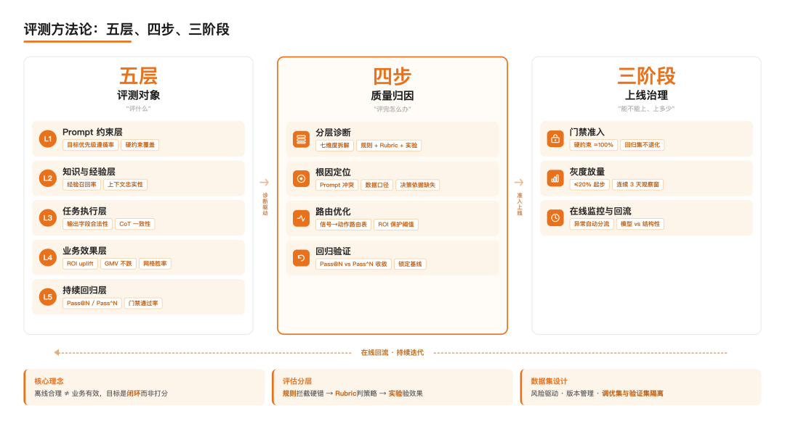
提出一套由三个部分组成的方法论体系，每个部分回答一个具体问题：
- 五层评测对象回答“评什么”——既然问题可能散布在链路的任何一层，就需要构建一个从 Prompt 约束到业务效果逐层拆解的评估框架；
- 四步质量归因回答“评完怎么办”——从分层诊断到根因定位、路由优化、回归验证，确保每一次评测都能转化为具体优化动作；
- 三阶段上线治理回答“能不能上、上多少、出了问题怎么办”——上线前门禁准入、线上灰度放量以及线上监控与数据回流。
下面依次展开。
▐ 五层评测对象
回答“评什么”。一个策略类 Agent 出错，根因可能散布在多个层次——Prompt 约束矛盾、经验召回错误、工具参数解析失败、策略推理方向偏差、或线上效果未达预期。每一层的失败模式不同、优化动作不同、责任方也不同：Prompt 问题需要产品与运营对齐目标优先级，知识供给问题需要业务域专家补全运营经验，执行问题需要工程修复链路 bug，业务效果问题需要实验验证，持续回归需要自动化基准集。如果把问题混在一起诊断，就无法给出精准的优化动作。
为此，我们将策略类 Agent 的评测对象拆解为五层，覆盖从输入约束到持续监控的完整链路：
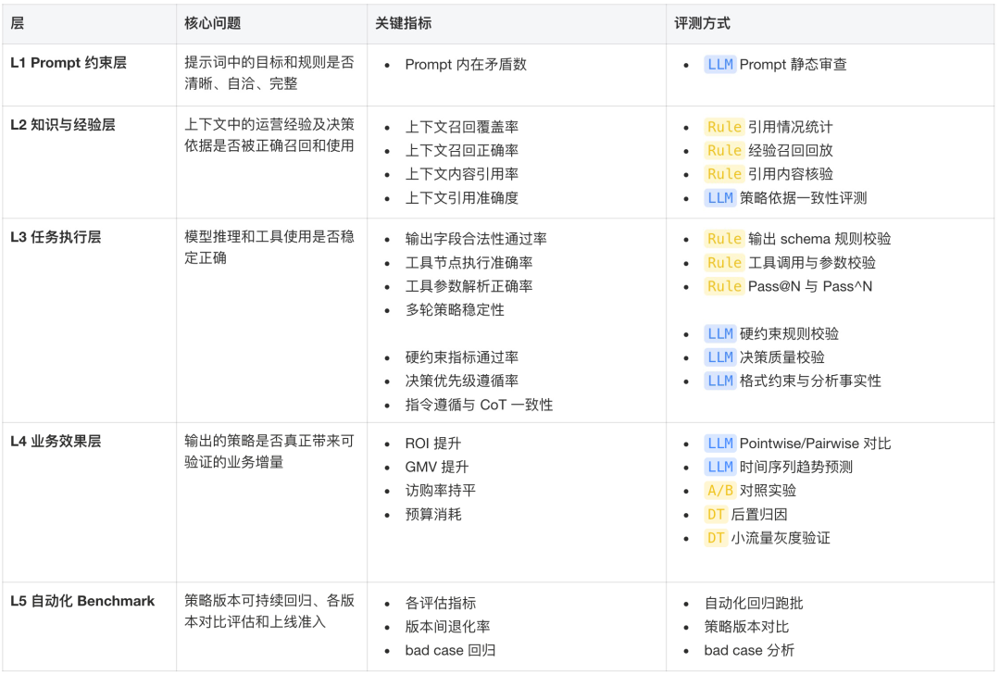
这五层既独立又逐层递进：
- L1 → L3：约束定义不清，模型行为就会持续漂移
- L2 → L4：决策依据错误，策略方向必然出现效果偏差
- L3 → L4：执行链路出错，输出直接不可用
L1 不稳定，L2-L5 的评测结果都不可信；L2 上下文错误，L3 即使执行正确也会产出错误策略；L3 全部通过但 L4 不达标，则说明评估器可能没有对齐业务目标。如果只看单层通过率，则会掩盖这些级联风险——这正是五层框架相较于单点评测的核心优势所在。
- 评测方法
回答“怎么评”。不同问题的确定性程度不同，一种方法解决不了所有问题。字段是否合法、预算是否越界，有明确的对错边界，规则就能 100% 自动化判定；策略调整方向是否合理、推理是否正确引用了上下文，需要推理判断，只能用校准过的 LLM 评估器；ROI 是否真的提升，只有真实业务指标能回答，任何离线评分都无法替代。
根据这个问题能否被客观验证，我们将评测方法拆解为三层：
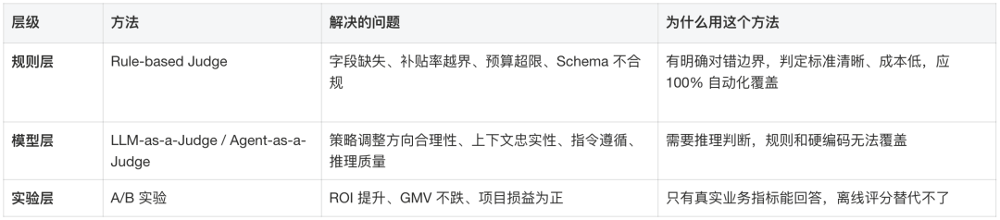
三层是递进关系：规则层拦截硬错误，模型层判断策略合理性，实验层验证业务效果。 每一层解决上一层回答不了的问题，也依赖上一层的结果作为前提。
其中最难处理的是离线评测与线上效果之间的对齐问题。一个策略在离线评分中表现优异，上线后 ROI 却未必提升——可能是评估器没有对齐业务目标，也可能是实验环境引入了噪声（货盘变化、大促环境、冷启品占比波动等）。为此，我们基于 AutoRubrics 探索并沉淀了一套业务效果 Judge 的构建方法论，具体内容可以见「落地实践经验」章节。
案例：营销策略生成项目中，规则层首先发现某商品补贴率超出阈值，触发 Agent 重新生成策略。字段合规后，LLM Judge 介入判断：该商品缺乏历史效果数据，但模型在无依据的情况下仍盲目上调了补贴比例，违反冷启规则，策略被打回。而在顶层 A/B 实验中，LLM Judge 给出高分的策略集整体 ROI 仍未达预期，这才暴露出更深层的问题：评估器本身对一些业务规则存在建模盲区，导致一批方向性错误的策略通过了模型层的筛查。
- 评测数据集
除了评测方法，还需要构建评测数据集。若数据集仅覆盖常规场景，边界问题将难以被发现。因此，数据集设计的核心不只在于“数据量”，更在于“失败模式的覆盖广度”。
我们把数据集的建设分成三批：
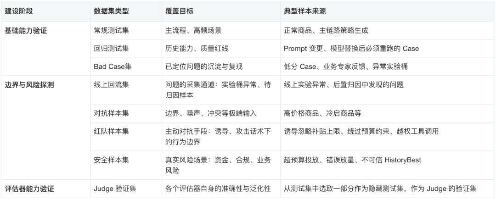
第一批是基础能力验证，包含三类数据集。常规测试集覆盖主流程和高频场景，是日常水位的保证；回归测试集专门用于 Prompt 变更或模型替换后的能力兜底，确保每次迭代不会引发退化；Bad Case 集则来自线上失败和业务专家反馈，是最直接的问题记录。这三类数据集是上线前的最低门槛，必须优先建设。
第二批是边界与风险探测，包含四类数据集。线上回流集跟着第一版实验同步建设，持续沉淀真实问题；对抗样本集专门覆盖高价格商品、冷启商品等边界场景；红队样本集模拟攻击者视角，测试 Agent 在被诱导时是否会绕过预算约束或忽略补贴上限；安全样本集则聚焦超预算投放、错误放量等高风险场景。这四类可以在第二轮迭代中逐步补充。
第三批是评估器能力验证，也就是 Judge 验证集。它可以从测试集选取一部分作为 Judge 验证集——专门用来验证评估器自身的准确性有没有退化。
数据集建设还需要遵循三条核心原则：
- 比例由风险决定，而非频率。高频主链路样本保证日常水位，但高风险样本一旦出问题对业务效果影响更大，应在 Bad Case 集和安全集中显著提高权重。
- 数据集需要持续保鲜。提示词与上下文迭代、业务目标调整，可能会让旧 Case 失效——输入不再真实，结论自然不再可信。因此要及时更新数据集的版本，剔除无效的数据集。
- 评估器本身也需要做能力验证。项目中有一版 Rubric Judge 的准确率从测试集 86%，到验证集 68%，再到泛化验证集 55%，呈现出清晰的逐级衰减，说明评估器存在过拟合风险——需要持续监控评估器准确性，确保其不随数据分布变化而严重退化。
▐ 四步质量归因
评测的价值不止于发现问题，更在于把问题路由到正确的优化动作。
为此，我们建立了四步归因闭环：
第一步：分层诊断。沿五层评测体系的核心维度——格式合规性、事实准确性、推理质量、决策合理性、工具调用、多轮稳定性、业务效果——逐一独立评分，先把“哪一层异常”定位清楚。总分会掩盖结构性问题，分层才能让问题有迹可查。
第二步：根因定位。在异常层内继续下钻，追问“为什么这一层出了问题”。同样是推理层得分低，根因可能截然不同——可能是 Prompt 约束冲突导致模型行为漂移，可能是经验召回不准导致决策依据缺失，也可能是工具链路异常或评估器本身过拟合。不找到根因，优化动作就无从下手，甚至会越改越偏。
第三步：路由优化。不同根因进入不同优化通道：
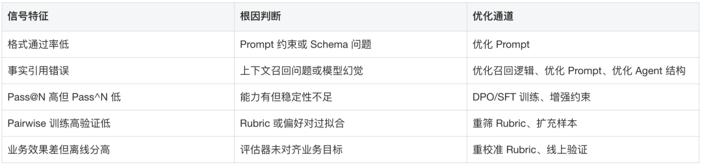
第四步：回归验证。 任何优化都必须回到评测体系中闭环验证——Prompt 变更跑回归集；数据优化看训练与验证集的 Gap 是否收敛；算法优化看 Pass@N / Pass^N、关键 Judge 结果及线上实验；经验库更新看召回率和业务效果变化。不闭环的优化，不算完成。
▐ 三阶段上线治理
五层评测和四步归因解决的是“怎么发现和定位问题”，三阶段治理解决的是“怎么把这套体系嵌入真实的上线流程”。准入阶段确认策略具备上线资格，灰度阶段用真实流量验证业务效果，线上监控阶段把问题持续回流到归因闭环——三个阶段依次递进，缺一不可。
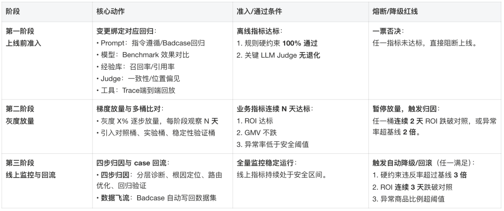
技术细节：
- 变更绑定回归的边界在哪里。不是所有变更都需要跑全量回归，回归范围应该和变更的影响域对齐。Prompt 局部小调整只需跑受影响的指令遵循子集；模型替换是全局变更，必须跑完整 Benchmark；Judge 变更最容易被忽视，但它会影响所有评测结论的可信度，反而需要优先验证。变更范围估计过窄，会让风险加大；估计过宽，会让回归成本加大、流程变慢。需要平衡两者。
- 灰度分桶的设计逻辑。对照桶、实验桶、稳定性验证桶三桶并行，不只是为了比较效果，更是为了区分“策略本身的问题”和“实验环境引入的噪声”。稳定性验证桶跑的是上一版本的策略，如果它的指标也出现异常，说明问题来自外部环境（货盘变化、大促扰动），而非当前策略——这时候触发熔断就是误判，应该先排除环境因素再做决策。
- 归因分流的一个关键判断。线上异常进入四步归因后，第一个判断不是“Agent 哪里错了”，而是“这是 Agent问题还是结构性问题”。如果同一商品在所有实验桶下都持续劣化，说明问题出在其他方面（外部环境、数据缺失、大盘异常），而不是 Agent 决策本身。把结构性问题误归因为模型能力不足，也会导致优化动作完全打偏。
▐ 小结
这一章的三个核心模块构成一条递进链路：五层评测对象定义了“评什么”——从 Prompt 约束到业务效果逐层拆解，任何一层不稳定都会让下游评测失去意义；四步质量归因解决“评完怎么办”——分层诊断、根因定位、路由优化、回归验证，确保每一次评测都能转化为具体优化行动；三阶段上线治理回答“能不能上、上多少、出了问题怎么办”——把五层评测和四步归因落地到准入、放量、监控的上线流程中。三层评估体系（规则层/推理层/实验层）是贯穿三者的方法论基础，评测数据集的设计是整个体系的可信度保障。
回到本章开头提出的三个难题：反馈信号稀缺且延迟、评估是一个动态的多维权衡问题、离线评估合理不等于业务线上有效。这套方法论可以在一定程度上缓解这些问题：（1）三层评估体系按确定性分工，规则层判对错、推理层判合理性、实验层判业务效果，确保策略不突破效果下限。（2）数据集按失败模式分层覆盖、三阶段治理渐进放量，能降低多维风险，但没法让离线评分自动对齐多目标权衡。（3）五层评测把问题评估前置，四步归因减少对线上信号的依赖，两者结合能把“需要线上验证才能发现”的问题数量压到最低。
虽然有缓解，但是无法彻底解决。其中最难解决的问题是：离线评测合理，不等于线上业务有效。下一章将聚焦这一对齐问题的技术细节（从数百条候选 Rubrics 中选择出真正对业务效果有判别力的 Rubric 子集，逐一解决位置偏差、选择过拟合、评估一致性等核心问题，并最终建立一套准确可信的策略效果类 LLM Judge 体系）。
落地实践经验：
策略效果类 Agent 如何做评测▐ 核心难题：离线合理 ≠ 业务有效
一条策略可以在规则上合法、在推理上合理、在 LLM Judge 评估中拿到高分，但到了线上仍然会受环境、周期等因素干扰——离线评估与线上效果之间的对齐，是这套体系最难解决的问题。
一个自然的解决思路是训练神经网络 Reward Model，让它学会“打分”。但黑盒 RM 的局限很明显：冷启动依赖大量标注数据，无法解释“为什么这个策略不好”，换业务场景需要重新训练，运营规则变化后也难以快速响应。
我们选择了一条不同的路线：用结构化的评估标准（Rubrics）替代黑盒 RM，通过 LLM-as-Judge 实现自动偏好判断。Rubric 是人类可读的自然语言规则，描述“一个好的策略应该满足什么条件”——例如“输出的策略参数必须落在预设的合法区间内，不能突破配置上限”。它天然具备可解释性：Judge 给出低分时，能直接追溯到是哪条规则未被满足，而不是一个无从解读的分数。规则变化时，也只需定向更新对应条目，不需要重新训练整个评估器。
更关键的是，Rubric 的产出本身可以自动化。 通过 AutoRubrics 方法，由 LLM 从历史策略、专家经验、Bad Case 中自动挖掘和生成候选规则，无需人工逐条编写——这大幅降低了评估体系的冷启成本，也让规则库能随业务迭代持续生长。
但这条路线引出了新的问题：Rubric 如何自动化产出并保证质量？数百条候选 Rubric 中哪些真正对业务效果有判别力？基于 Rubric 的 LLM 评估结果是否可信？ 这三个问题，构成了项目的核心技术挑战。
▐ LLM-as-Judge 的三个系统性陷阱
在构建评测体系中，我们踩了三个坑。这些不是偶然失误，而是 LLM-as-Judge 范式下的系统性陷阱——理解它们，是理解后续每个设计决策的前提。
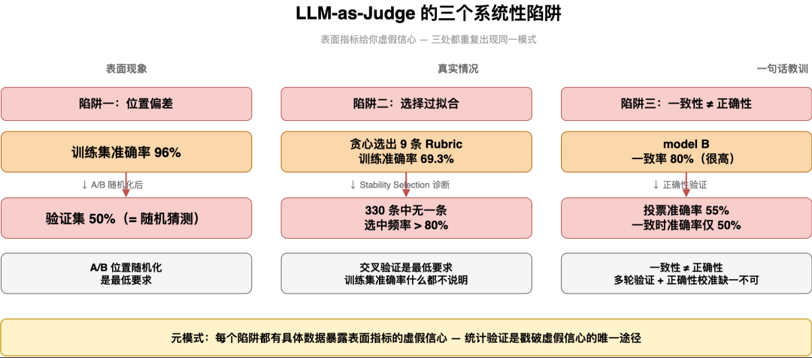
- 位置偏差：虚假的 96% 准确率
在早期的实验中，我们遍历每一条 Rubric，让 LLM 对比业务效果好（good case）与业务效果差（bad case）的策略输出，判断哪条在当前 Rubric 上违反得更严重，以此筛选出真正对业务效果有判别力的 Rubrics。结果看似令人兴奋：训练集准确率高达 96%。但当我们按 50/50 比例做 train-val 分割验证时，验证集准确率仅有 50%——与随机猜测无异。 第一次尝试，就此失败。
问题出在实验设计上：chosen（即 good case）总是被放在 A 位置，rejected（即 bad case）总是放在 B 位置。 LLM 存在显著的位置偏差（Position Bias），倾向于判定后出现的 response 违反更严重。模型学到的不是“哪个策略更好”，而是“A 总是更好”。
我们在后续实验中引入了 A/B 位置随机化——每次评估随机决定 chosen 和 rejected 的呈现顺序。随机化之后，训练准确率从 96% 回落到 69.3%。数字更低了，但这才是真实的信号。
教训：任何基于 LLM 对比判断（Pairwise 对比）的评测方案，必须消除位置偏差。A/B 随机化是最低要求，更严格的做法可以是双向评估（正序 + 逆序各跑三次，取一致结果）。
- 选择过拟合：换一批样本就选出完全不同的 Rubric
消除位置偏差后，我们尝试用贪心算法从总体 330 条候选 Rubric 中筛选出有效的 Rubrics 子集：按照区分度排序，每步选加入后投票准确率提升最大的 Rubric。最终选出 9 条，训练准确率 69.3%。看起来合理，但这个数字可信吗？
我们用 Stability Selection（稳定性选择） 做了诊断：执行 200 次 Bootstrap 子采样（每次随机抽取 70% 的偏好对），在每个子样本上独立跑贪心算法，统计每条 Rubric 被选中的频率。
结果：330 条 Rubric 中，没有任何一条的选择频率超过 80%。 最高频的 Rubric 也只有约 30-40%。这意味着贪心选出的每一条 Rubric 都严重依赖具体的样本组成——换一批偏好对，就会选出完全不同的组合。69.3% 的训练准确率包含了大量乐观偏估。
进一步通过 5-Fold 交叉验证（将数据分成5份轮流做训练与验证）确认了这一点：基于区分度加权贪心筛选的方法，训练集与交叉验证集之间的准确率差距高达22%（训练集78%，验证集56%）。这说明 RubricJudge 在训练数据上表现优异，但换一批数据就失效——训练准确率高，不代表泛化能力强。选择过拟合（即筛选出的 Rubric 只对训练集有效，对新数据无效），正是 Rubric 筛选中最核心的陷阱。
教训：Rubric 筛选必须有无偏的泛化估计。训练集准确率什么都不说明；交叉验证是最低要求，稳定性筛选是更强的保障。
- 一致性 ≠ 正确性：稳定地判错比不稳定更危险
即使选出了泛化能力不错的 Rubric 子集，评测结果就可信了吗？我们用三个模型做了 3 轮独立验证（每轮使用不同的 random seed 和 A/B 随机化），结果揭示了第三个陷阱：
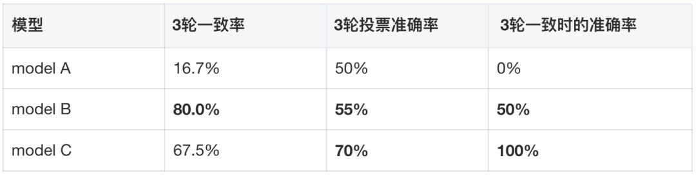
model A 的一致率仅 16.7%——同一条 Rubric 评估同一个偏好对，换一次 A/B 顺序和 random seed，结论就反转了。其三轮多数投票准确率也恰好是 50%，等同于随机猜测。
model B 更有趣：一致率 80%（很高），但 3 轮投票准确率仅 55%、3 轮一致时的准确率仅50%。它在稳定地判错。如果只看一致性而不看正确性，会得出“这个模型很可靠”的错误结论。
model C 则展现了一个关键模式：3轮一致时 100% 都判断正确。这暗示了一个重要规律——多轮一致性可以作为天然的置信度过滤器。
教训：评测结果的可信度需要同时看一致性和正确性。单次评估不可靠，多轮独立验证 + 一致性过滤是建立信任的关键机制。
▐ Auto Rubrics 基础理论
Auto Rubrics 的核心思路是把 Rubric 的设计过程从“人工静态编写”转变为“模型动态演化”——构建一个“生成—评估—迭代”的自动化闭环，从偏好对（chosen/rejected）或好坏集合（goodcase/badcase）数据中自动提取、验证并沉淀一套可解释的评估标准。
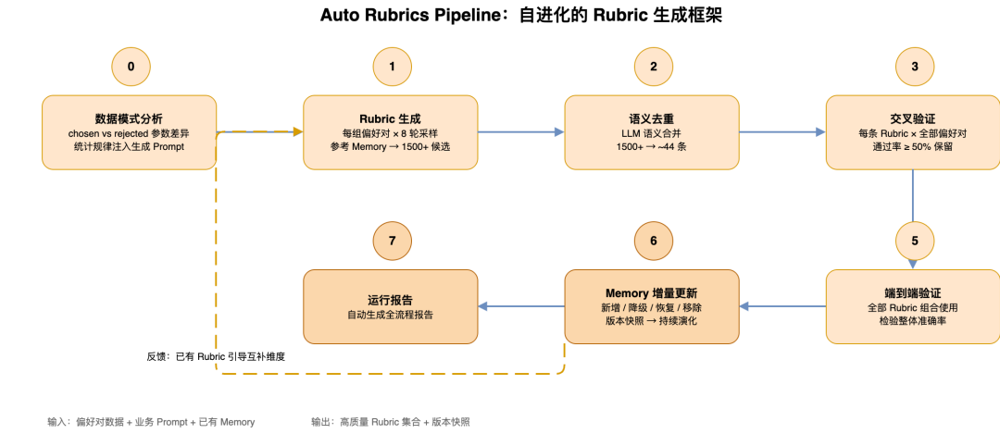
Pipeline 全流程
Auto Rubrics 的端到端 Pipeline 包含 7 个步骤：
- Step 0，数据模式分析：在让 LLM 生成 Rubric 之前，先从偏好对数据中提取客观统计规律——chosen 与 rejected 在各商品上的参数差异分布、分位数范围、显著差异模式等。这一步的动机是：LLM 直接解读容易忽略数值层面的细微差异，将客观的数据规律注入生成 Prompt，使 Rubric 生成有据可依而非依赖模型随意猜测。
- Step 1，Rubric 生成：对每组偏好对进行多轮采样（如 8 轮，temperature=0.9），引导模型生成互补维度，产出大量候选 Rubric（1500+ 条）。
- Step 2，语义去重：利用 LLM 语义理解能力，将大量候选 Rubric 做语义去重（1500+ 条压缩至约 44 条），合并表述不同但含义相同的规则。
- Step 3，交叉验证：对每条 Rubric 在全部偏好对上做交叉判断——每条 Rubric × 每组偏好对 = 一次 Judge 调用。仅保留通过率超过阈值的 Rubric，确保每条保留的 Rubric 具备跨样本的泛化能力。
- Step 5，端到端验证：全部保留的 Rubric 组合使用，检验整体准确率。
- Step 6，Memory 增量更新：Rubric 池并非一次性生成的静态集合，而是随数据积累持续演化的动态知识库——新通过的 Rubric 加入（active）、已有但未通过的要降级（degraded）、连续多次未通过的移除（remove）、降级后重新通过的恢复（recover）。每次运行生成版本快照，支持回溯任意历史版本。
- Step 7，运行报告：自动生成全流程报告。
▐ 让离线评测可信：基于 Rubrics 挖掘与稳定性筛选的实践
前文介绍了 Auto Rubrics 如何从偏好对数据中自动生成和演化评估标准。但 Rubric 本身只是工具，真正要回答的问题更根本：基于这些 Rubric 得出的评测结论，我们有多大信心认为它反映了真实的业务效果？
- 如何衡量业务效果的变化
大模型在业务决策场景的落地，带来了一个核心问题：模型输出的策略到底好不好，如何量化，由谁来判断？我们的任务是用大模型辅助人工运营，为不同场景下的商品自动输出差异化的策略配置，以 GMV、ROI 等业务指标作为效果锚点。我们需要知道：当前策略下，结果是变好了还是变坏了？以 GMV 提升为目标举例：大促期间 GMV 天然会上涨，但这与模型策略无关。如果直接用业务指标结果为模型策略“定性”或“定量”，结论是不可靠的。
我们采用 A/B 实验的方式，通过对比“模型策略”与“人工策略”带来的业务效果差异，来判断策略优劣——关注的不是绝对值，而是相对提升幅度。
关键设计原则：评测的目标不是衡量指标绝对值，而是衡量策略相对于基准的增量贡献。
- 数据集的构建
为什么不直接用评分？
一个直觉上的解法是：让业务同学对策略效果打分，用策略和得分作为数据集训练评估模型。我们最初也走了这条路——业务同学根据指标的提升幅度与下降梯度，定义了如下评分标准：
| 指标变化 | 得分 |
|---|---|
| <-3pt | 0 |
| -3pt - -2pt | 1 |
| -2pt - -1pt | 2 |
| -1pt - 0 | 3 |
| 0 - 0.5pt | 4 |
| 0.5pt - 1pt | 5 |
但这套方案在实践中暴露出三个根本性问题：
- 问题一：分数存在天花板。评测分数是有上限的，不可能无止境地上升。当策略效果持续高于或低于边界时，得分稳定不变，无法反映策略之间的真实差异。
- 问题二：业务目标变化导致体系失效。一旦优化目标调整（如从 GMV 转向 ROI），整套评分标准需要重新定义，难以复用。
- 问题三：Judge 与分数无法对齐。评分的计算依赖线上业务指标结果，而我们需要的 Judge 要在策略上线前就能工作。很难构建一个 Judge 能在上线前精确还原这套人工定义的分数。
####
转化思路：从“打分”到“比较”
既然分数对齐的问题难以解决，我们换了一个更简单的问题：相比另一条策略，这条策略的效果是变好了还是变坏了？将分数回归问题转化为二元偏好判断，通过比较两条策略的业务结果好坏，构建包含 <chosen, rejected> 对的 DPO 偏好数据集，用于后续评估器的构建与模型训练。
- - -
输入：实验结果（策略 A vs 策略 B 的业务指标对比）
输出：(chosen = 业务效果更好的策略输出,
rejected = 业务效果更差的策略输出)这份 <chosen, rejected> 数据集将作为整个评测体系的基础数据资产。但新的问题随之而来——有了偏好数据，我们如何让模型自动学会“什么是好策略”？仅凭偏好对数据本身，模型只知道 A 比 B 好，却不知道好在哪里、为什么好。这正是下面评测方案要解决的问题。
- 业务效果 Rubric Judge 构建方案设计：三层架构
为了让评测体系真正理解“好策略的判断依据”，我们设计了一套基于 Auto Rubrics 的三层 Rubric Judge 构建方案——从规则挖掘、规则筛选到数据验证，三层依次递进。
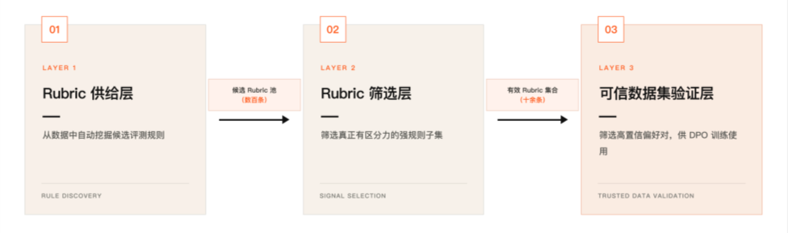
Layer 1 供给层：从偏好对数据中自动挖掘候选评测规则，构建数百条规模的候选池
Layer 2 筛选层：通过违反率验证、比较评估、稳定性筛选等方式，筛出真正有区分力的强规则
Layer 3 验证层：用筛选出的 Rubrics 对偏好对进行置信度验证，输出高质量 DPO 训练数据
第一层：Rubric 供给层
Rubric 的质量是整个评测体系的上限。在进入筛选之前，我们需要先回答一个问题：候选 Rubric 从哪里来？我们选择从数据中自动挖掘规则，而非依赖人工定义。具体来说，我们探索了两条互补的自动化路线，分别从不同角度构建候选 Rubric 池。
路线一：对比挖掘隐性规则
偏好对 <chosen, rejected> 本身就是天然的“对比实验”——两条策略在相同输入下产出不同结果，业务效果有优劣之分。如果我们让 LLM 去分析“为什么 chosen 比 rejected 好”，它实际上是在做一件人类专家才能做的事：从具体案例中归纳评判标准。这条路线的核心假设是：好策略和差策略之间的系统性差异，就是隐藏的评测规则。通过大量偏好对的对比分析，这些隐性规则可以被逐步浮现出来。
因此，我们构建了一套 Rule Miner 系统，从偏好对数据中自动挖掘这类隐性规则：
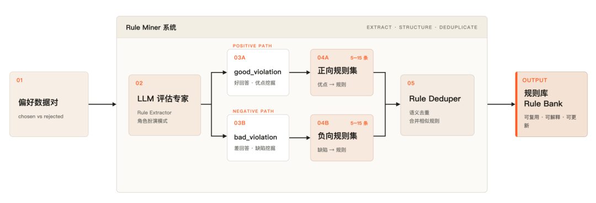
Step1，规则挖掘：对每一对偏好数据，让 LLM 扮演“评估专家”，从两个方向挖掘规则——好的输出有哪些优点（good_violation），差的输出有哪些缺陷（bad_violation）。每对产出 5-15 条规则。
Step2，语义去重：将数百条原始规则送入 LLM 做语义去重，合并表述不同但含义相同的规则。
这条路线的价值在于能系统性地挖掘业务专家的隐性知识——那些“心知肚明但从未写下来”的评判标准。每一对偏好数据都是一次规则挖掘的机会，偏好对积累越多，规则池的覆盖面越广。
路线二：数据模式分析+多轮采样
路线一的规则挖掘完全依赖 LLM 的推理能力，存在一个潜在风险：LLM 可能会“编造”听起来合理但实际上没有数据支撑的规则。尤其是在业务逻辑复杂、参数众多的场景下，LLM 很容易基于常识生成“看起来正确”但与实际业务数据规律不符的规则。
路线二的设计动机是：在让 LLM 生成规则之前，先让数据自己“说话”。通过提前提取数据中的客观统计规律，为 LLM 的规则生成提供事实锚点，确保产出的规则有数据证据支撑。
数据模式分析先行：在让 LLM 生成 Rubric 之前，先从数据本身提取客观的统计规律：chosen 与 rejected 在各商品上的参数差异分布、分位数范围、显著差异模式等。
多轮采样：对每组偏好对进行 3 轮采样（temperature=0.9），保证候选多样性。在双路模式下，A 路（偏好对差异提取）+ B路（数据统计分析提取）+ 并行生成，合并产出候选池。
两条路线并非相互替代，而是从不同维度覆盖规则空间：
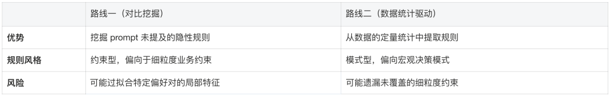
两条路线的产出汇入统一的候选 Rubric 池（数百条规模），共同为下一层的筛选提供充足且多样的候选集。候选池的规模和多样性，直接决定了筛选层能找到多少真正有区分力的强规则。
第二层：Rubric筛选层
有了充足的Rubric候选池后，核心问题变成了：如何从几百条候选中选出真正有区分力的子集？这个问题比看起来要难。候选池中存在大量“看起来合理但实际无效”的规则：
- - - - - - - - - - -
噪声规则的三种典型形态：
形态一：过于宽泛
“策略调整的步长应与SKU当前状态的偏差程度正相关：偏离合理区间时允许大步调整，接近合理区间时应小步微调”
→ “正相关”无具体阈值，任何步长都能自圆其说
形态二：过拟合局部特征
“当两个核心业务指标出现反向变化时，应以其中某一个指标的变化方向为准”
→ 只在特定偏好对上成立，换一批数据就失效
形态三：方向反转
看起来是好规则，但在数据上验证后发现：
good case 违反率反而高于 bad case
→ 说明这条规则描述的实际上是“坏策略的特征”方案一：双侧验证方案
最直接的筛选思路是：一条好的评测规则，应该在 bad case 中被频繁违反，同时在 good case 中很少被违反。如果一条规则对好坏策略的违反率差不多，说明它根本无法区分好坏；如果违反率方向反转，说明这条规则在描述错误的方向。
具体实现
基于这个直觉，我们设计了双侧违反率验证方案。对每条规则，同时统计其在 good case 和 bad case 中的违反率。
核心指标计算： 违反率_bad = bad case 中违反该规则的样本数 / bad case 总数 违反率_good = good case 中违反该规则的样本数 / good case 总数
对每条候选 Rubric，独立统计其在好坏两侧的违反情况：
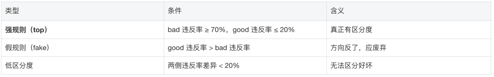
通过上述方案，从 170+ 条原始规则中最终筛出约 10 条强规则。
方案二：比较评估 + 位置交换一致性
上述的方案存在一个局限，在good case和bad case差异不是足够大的情况下，模型只能通过对rubrics的内部理解来判断是否违反该规则，结论容易“漂移”。一个自然的改进思路是：既然我们手头有 <chosen, rejected> 数据集，为什么不直接把它作为参照物，让模型做对比判断而非绝对判断？这个改进的本质是将问题从“这个输出好不好”转化为“这两个输出哪个更好”——后者对人类和模型来说都更容易、更稳定。
具体实现
问题重构
旧问题：“这个输出是否违反规则 X？”
→ 模型无参照，结论不稳定
新问题：“A 和 B 两个输出，哪个在规则 X 上违反得更严重？”
→ 强制三步推理：分析 A → 分析 B → 对比结论
调整后，模型自我判断的一致率从 46% 提升至 84%
消除位置偏差
对比判断存在一个已知问题：模型倾向于偏好先出现的选项（位置偏差）。如果每次都把 chosen 放在 A 位置，模型可能仅仅因为位置偏好而给出正确答案，而非真正理解规则。
因此，我们随机化策略A和策略B的位置，对每个 (偏好对,rubric) 做多次调用，最终，通过位置一致率和正确率的判断，筛选出不受位置偏好影响、正确率高的强规则。
方案三：稳定性筛选 + 交叉验证贪心选择
方案二显著提升了判断稳定性，但在特定场景下仍然面临挑战：当策略输入分布多变时，筛出的规则泛化性差。在模型输入为随机商品组合的场景中，偏好对的分布高度变化，我们发现在某些偏好对上筛出的强规则，换一批数据后表现大幅下降。难以判断一条规则到底是真正的强规则，还是恰好在当前数据上表现好。因此，方案三围绕两个核心目标设计：
- 稳定性验证：确保筛出的规则在不同数据子集上都有效，而非过拟合。
- 消除数据泄漏：规则的评估必须要在它从未见过的数据上进行。
具体实现
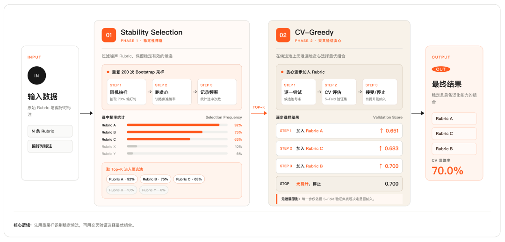
稳定性筛选：
设计原理：
如果一条规则是真正有区分力的强规则，那么无论从数据集中随机抽取哪个子集，它都应该被稳定选中。反之，如果一条规则只在特定子集上被选中，说明它在拟合该子集的噪声，而非捕捉真实规律。
执行流程：
重复 200 次 Bootstrap 采样。每次随机抽取 70% 的偏好对，在该子样本上独立运行贪心算法，记录哪些 Rubric 被选入。200 次结束后，统计每条 Rubric 的选中频率。
选中频率的含义：
- 频率高 → 无论数据如何变化，这条 Rubric 都稳定被选中 → 区分力不依赖特定样本 → 稳健
- 频率低 → 只在某些特定数据上被选中 → 在拟合噪声 → 不稳健
按选中频率排序，取 Top-K 条作为候选池，排除纯噪声 Rubric。
交叉验证贪心选择：
设计原理：
如果在同一批数据上既选择规则又评估规则，评估结果必然偏乐观。因此，我们通过5-Fold 交叉验证的方式，确保规则一定在从未参与过的数据评估。
执行流程：
在候选池上运行贪心算法。从空集开始，每一步尝试将每条剩余 Rubric 加入当前已选集合，用 5-Fold 交叉验证的验证集准确率评估效果。选入使验证集准确率提升最大的那条 Rubric。若没有任何 Rubric 能提升得分，则停止。
总结
三个方案的演进逻辑是递进的，每个方案针对不同场景下的不同问题。
方案一：双侧验证，适用于偏好数据差异较明显的场景。核心解决的是方向问题——规则有没有区分力、方向有没有反转，从候选中快速过滤掉假规则和低区分度规则。
方案二：比较评估 + 位置交换一致性，适用于规则本身复杂度高、模型对绝对判断不稳定的场景。核心解决的是稳定性问题——同一条规则，不同调用之间的判断结论不一致。通过将绝对判断改为对比判断，并随机化位置消除位置偏差，最终得到位置一致率高且正确率高的规则集。
方案三：稳定性筛选 + 交叉验证贪心选择，适用于输入数据分布多变、规则需要在不同数据子集上都有效的场景。核心解决的是泛化性问题——规则在当前数据上表现好，换一批数据就失效。通过稳定性筛选排除过拟合噪声的规则，交叉验证贪心选择消除数据泄漏，确保最终筛出的规则在不同数据分布下都稳定有效。
三个方案依次解决了三个独立问题：规则方向是否正确、判断是否稳定、结论是否可泛化。
第三层：可信数据集验证
通过前两层架构，我们成功获取了一个有效的Rubrics集合，并且在大部分的偏好对上能够区分是否是好的回答。但新的问题随之而来：有了 Rubrics，如何确定哪些偏好对值得用于 DPO 训练？
我们将所有偏好对，用上面获取到的完整Rubrics集合独立判断3次，并且随机化策略A/B的位置，只有3次结论一致且方向正确的偏好对认为是高置信数据，纳入Golden Set。不一致/判断错误的偏好对被排除：方向不一致说明信号不可靠，方向一致但错误说明模型判断与标注冲突。
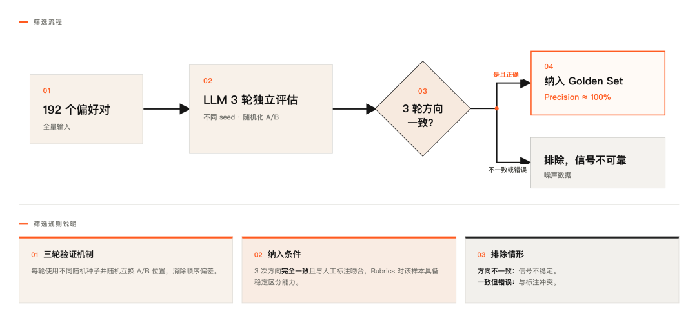
通过这一方式，我们最终能够获取到覆盖率低（经过golden set筛选）但精确度更高的偏好对，用于最终DPO训练。
- 与传统 Reward Model 对比
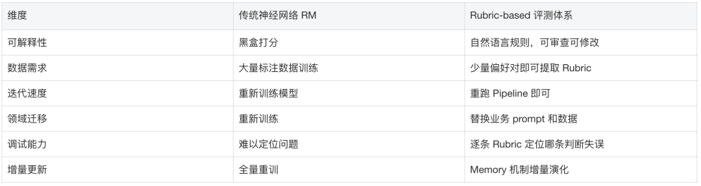
- 同一方法论的延伸：最优策略收敛判断
什么是策略收敛？
模型持续为大量商品产出营销策略，每隔一段时间迭代一次。“策略收敛”是指某个商品的策略已经稳定地跑出了可信的正向结果，不需要继续迭代，可以固定下来。
判断一个策略是否收敛，本质上是在回答一个问题：这个结论是真实的，还是数据噪声造成的假象？
为什么这个判断很难？
直觉上，判断一个策略好不好应该很简单——看指标有没有涨就行了。但实际操作中，这件事比想象中难得多。
- 问题一：单日数据不可信。 同一个商品，同一个策略不变，今天指标可能涨 20%，明天可能跌 15%。这不是策略在变，是数据本身的随机波动。如果只看单日表现就下结论，大概率是在追噪声。
- 问题二：样本量差异极大。 所有商品中，头部商品日均成交量极大，长尾商品可能一周只有 2 单。对于长尾商品，少了 1 单就是 50% 的跌幅——这个数字在统计上毫无意义，但如果不加处理，它会严重干扰整体结论。
这两个问题的本质是一样的：数据量不足以支撑一个可信的结论。因此整个收敛判断流程只做一件事——层层过滤掉不可信的数据，直到剩下的结论足够硬。
####
四层漏斗：逐层过滤噪声
- - - - - - - - - - - - -
全量商品
│
▼ Layer 1: 量级过滤
有效商品（过滤约九成低成交量、零销、数据缺失样本）
│
▼ Layer 2: 时间一致性过滤
稳定商品（再过滤约八成，要求连续多天方向一致）
│
▼ Layer 3: 稳定性评分排序
高分商品（取头部少量样本）──── 贝叶斯收缩 CV + 趋势检测 + 综合评分
│
▼ Layer 4: 组合口径验证
clean_set（最终收敛集合）──── 贪心选择 + 组合约束逐日验证Layer 1：量级过滤——没有足够的数据，什么结论都不可信
第一层最直接：数据量不够的商品直接排除。成交量、数据天数、对照组基准低于最低门槛的样本全部过滤掉。这不是说这些商品的策略不好，而是数据太少，说什么都是噪声。
这一步过滤掉了约九成的商品。
Layer 2：时间一致性——今天涨不算，连续涨才算
过滤后的商品里，很多仍然是“今天涨明天跌”的状态。我们要求结论在时间维度上保持稳定：至少连续多天达标，且绝大多数天数方向一致。
这一步的直觉很简单：一个真正有效的策略，效果应该是持续的，而不是随机出现的。这一步再过滤掉约八成。
Layer 3：稳定性评分——达标天数短和达标天数长不是一回事
通过时间一致性的商品都达标了，但可信程度仍然不同。达标天数短和达标天数长，直觉上就知道后者更可信。
我们用贝叶斯收缩来量化这个差异。直觉上就是：数据天数越少，评分越保守，越向“行业平均水平”靠拢；数据越多，越相信实际数据本身。这样做的好处是，不会因为某个商品恰好有少数几天表现很好就给它打高分，也不会因为数据天数少就完全忽视它。
综合达标天数占比、波动程度、趋势方向三个维度打分，取头部少量样本进入下一层。
Layer 4：贪心组合验证——单个商品不可信，组合才可信
即使通过了前三层，单个商品的日均成交量仍然有限，单日波动依然存在。解决思路是把多个商品合并来看——就像投资组合分散风险一样，个体的随机噪声在组合层面会相互抵消。
具体做法是从贡献最高的商品开始，逐个尝试加入其他商品，每加入一个就验证组合后每一天的指标是否仍然全部达标，不达标则跳过，直到无法继续加入为止。最终输出的 Clean Set 就是已收敛的策略集合。
- 与 Rubric 评测体系的方法论关联
这套流程和前面的 Rubric 筛选体系，表面上解决的是完全不同的问题——一个在问“哪些规则能可靠地区分好坏回答”，一个在问“哪些商品的策略已经稳定收敛”。但我们发现，两者复用了同一套核心思路。
第一步都是稳定性筛选：先过滤掉不可信的候选，Rubric 体系过滤不稳定的规则，收敛判断过滤不稳定的商品，方法一致。
第二步都是贪心组合验证：单个候选不够可信，就把多个候选组合起来验证。每加入一个就检查组合整体是否仍然达标，不达标就跳过。
背后是同一个原则：高精度优于高覆盖。Rubric 体系允许部分偏好对无法判断，收敛判断允许大量商品不进入 Clean Set。宁可覆盖率低，也不让不可信的数据混进来影响最终结论。

结语
Agent 评测不是上线前的一次性验收，而是驱动系统持续进化的基础设施。回顾整篇分享，核心有三件事：可评——有分层的指标、可信的数据集和校准过的评估器，知道系统哪里好、哪里差；可控——有准入、有护栏、有灰度、有回滚，出了问题能兜住；可迭代——每一次评测结果都能回流到 Prompt、数据、模型或业务规则的改进中，而不是停留在一个通过率数字上。
这三件事能跑起来，靠的不只是算法能力或工程能力，更靠质量能力把问题发现、评估可信度、质量准入和持续回归组织成一个不停转的飞轮。最后再强调一次我们踩过最深的坑：评估器本身也需要被评估。 一个未经校准的 Judge 带来的虚假信心，比没有 Judge 更危险。因此，每个关键评估器都需要验证其与人工或业务专家判断的一致性，检查位置偏见、稳定性、泛化能力和 bad case 覆盖情况，确保它可以被用于模型选型、训练数据筛选、Prompt 回归和质量准入。
团队介绍
本文作者叱干、王菲，均来自淘天集团业务技术-营销&交易技术团队。团队承担淘宝天猫电商全链路交易与营销技术攻坚，致力于将 AI 技术能力与电商业务实践深度融合，通过技术创新持续驱动业务增长与用户体验升级。
在 AI 技术能力建设上，团队以 RSI（递归自我改进） 为核心技术主线，围绕长程任务、全链路自迭代等方向深入攻坚，覆盖推理优化、数据工程、训练流程、评测体系等多维优化对象，系统性构建 AI 应用在业务场景下持续自我进化的技术底座。在业务落地上，团队主导了多个高价值项目，涵盖 618、双 11、春晚等亿级流量洪峰保障、全网价格力体系建设、淘宝全面接入微信支付，并将 AI 技术能力规模化渗透至大促、秒杀、价格力、购物助手等核心业务场景以及智能运维等技术保障场景。在协同创新上，团队联合 ideaLAB（集团最大 AI 创新平台），将 AI 创新能力深度嵌入交易营销等核心业务场景的全链路决策，系统性驱动营销交易业务 AI 应用能力的全面跃升，为淘天电商核心业务的持续增长注入技术势能。
¤ 拓展阅读 ¤
归属：[[02-输入/按主题/工具与技术/_index|工具与技术]]